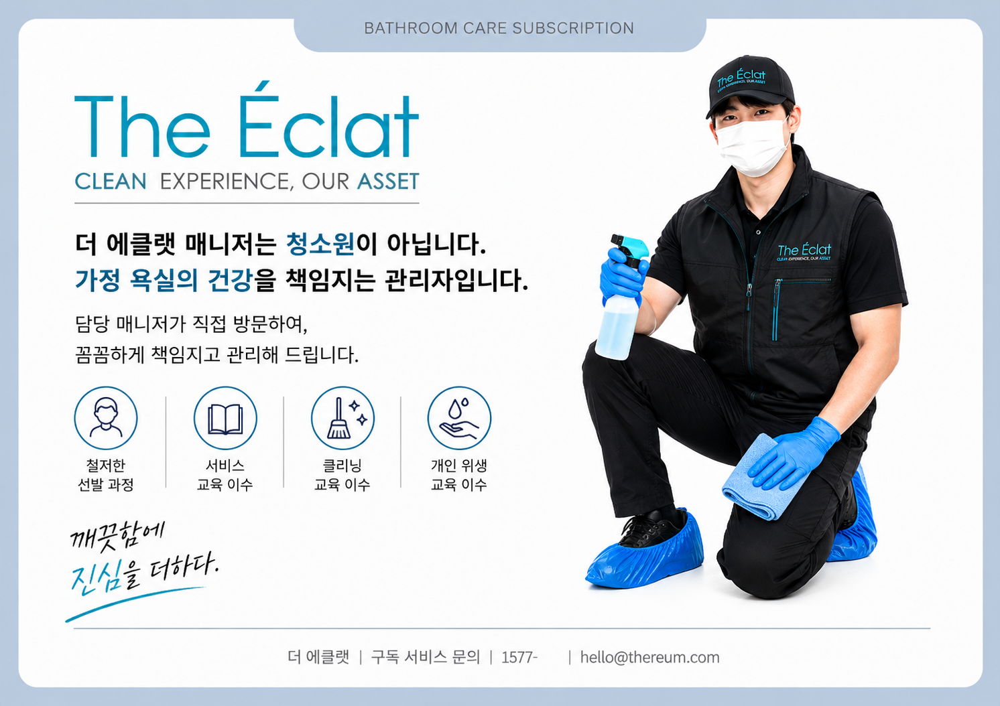
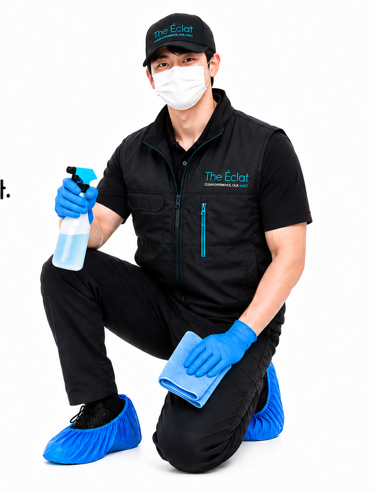
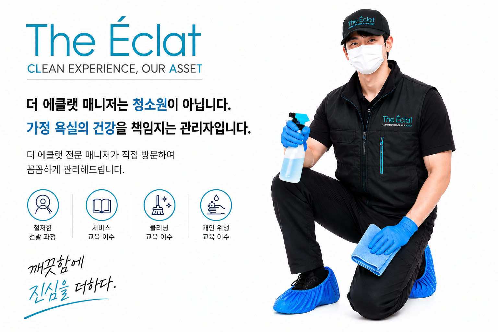

01 / SUBSCRIPTION
욕실 케어
가정 욕실을 정기적으로 관리하는 프리미엄 구독 케어.
CLEAN EXPERIENCE, OUR ASSET
단순히 청소하는 것을 넘어,
우리 가족이 머무는 공간의 기준을 관리합니다.

THE ÉCLAT STANDARD
더 에클랫은 한 번 깨끗하게 만드는 것보다
깨끗함이 오래 유지되는 생활을 생각합니다.
OUR SERVICES

가정 욕실을 정기적으로 관리하는 프리미엄 구독 케어.
새로운 시작을 위한 꼼꼼하고 섬세한 공간 케어.
보이는 곳뿐 아니라 내부까지 세심하게 관리합니다.
세탁조 안쪽까지 분해하여 위생적으로 케어합니다.
기름때와 오염을 제거하고 쾌적한 주방을 만듭니다.
우리 집에 필요한 관리 항목을 정하고
담당 매니저가 꾸준히 관리합니다.

THE ÉCLAT MANAGER
철저한 선발 과정과 서비스 교육, 클리닝 교육, 개인 위생 교육을 거친 매니저가 직접 방문하여 꼼꼼하게 관리합니다.
SERVICE PROCESS
전화로 필요한 서비스를 상담합니다.
공간과 상황에 맞는 관리 방법을 안내합니다.
담당 매니저가 약속된 시간에 방문합니다.
서비스 후에도 관리 기준을 함께 안내합니다.
CONSULTATION
서비스가 고민될 때는 편하게 문의해주세요.
필요한 관리만 정확하게 안내해드립니다.